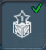
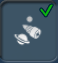
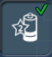
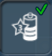
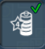
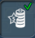

目次 > ゲームについて > シミュレーション攻略 > SPORE > コレクション一覧 > 宇宙ステージ
| 概要 | 情報 | ステージ攻略 |
| コレクション一覧 | 継承アビリティー一覧 | アチーブメント一覧 |
| SPORE 攻略へ | 目次へ戻る |
| [ 細胞ステージ ] [ クリーチャーステージ ] [ 集落ステージ ] [ 文明ステージ ] [ 宇宙ステージ ] |
| [ 1 ] [ 2 ] [ 3 ] [ 4 ] [ 5 ] [ 6 ] |
| 宇宙船のツール(惑星のカラーリングツール) |
| 名前 | 画像 | 入手条件 | 効果 |
| 赤色の空 | 拾う | 大気を赤くする | |
| 地表着色剤(赤) | 拾う | 地表を赤くする | |
| 拾う | 海を赤くする | ||
| オレンジ色の空 | 拾う | 大気をオレンジ色にする | |
| 地表着色剤(オレンジ) | 拾う | 地表をオレンジ色にする | |
| オレンジの海 | 拾う | 海をオレンジ色にする | |
|
拾う | 大気を黄色にする | |
| 地表着色剤(黄) | 拾う | 地表を黄色にする | |
| 拾う | 海を黄色にする | ||
| 緑色の空 | 拾う | 大気を緑色にする | |
| 地表着色剤(緑) | 拾う | 地表を緑色にする | |
| 緑の海 | 拾う | 海を緑色にする | |
| 青緑色の空 | 拾う | 大気を青緑色にする | |
| 地表着色剤(青緑) | 拾う | 地表を青緑色にする | |
| 拾う | 海を青緑色にする | ||
| 拾う | 大気を青くする | ||
| 地表着色剤(青) | 拾う | 地表を青くする | |
| 深青海 | 拾う | 海を青くする | |
| 拾う | 大気を紫色にする | ||
| 地表着色剤(紫) | 拾う | 地表を紫色にする | |
| ブドウジュースの海 | 拾う | 海を紫色にする | |
| 拾う | |||
| 拾う | |||
| 拾う | |||
| 惑星色リセット | 拾う | 惑星の大気・地表・海の色を初期状態に戻す | |
| 名前 | 画像 | 入手条件 | 効果 |
| 宇宙船のツール(宇宙船の能力) |
| 名前 | 画像 | 値段 | 入手条件 | 効果 |
| SETI | 自動的に知的生命体を検出する。 | |||
| 回収ビーム | (初期装備) | 落ちているものを回収するビームを出します。 | ||
| 移送ビーム | (初期装備) | 貨物室にあるものを地表におろします。確実に地面に置くまでちゃんとビームを出しておかないと、クリーチャーは死んでしまうので注意しましょう。 | ||
| 貨物室(小) |  | コレクター1、もしくは商人2 | 宇宙船の貨物室の載積量を増やす | |
| 貨物室(中) | 1.貨物室(小) を購入済み 2.コレクター2、もしくは商人3 のバッジ |
宇宙船の貨物室の載積量を増やす | ||
| 貨物室(大) |  |
1.貨物室(中)を購入済み 2.コレクター3、もしくは商人4 のバッジ |
宇宙船の貨物室の載積量を増やす | |
| 惑星間移動 |  | (初期装備) | 惑星の軌道上から出ることができる | |
| 星間移動ドライブ1 | (条件なし) | 星系から出ることができる | ||
| 星間移動ドライブ2 | 1.星間移動ドライブ1 を装備 2.勤勉な飛行士2、もしくは使い走り1 のバッジ |
宇宙船の移動可能な距離を増やす | ||
| 星間移動ドライブ3 | 1.星間移動ドライブ2 を装備 2.勤勉な飛行士3、もしくは使い走り2 のバッジ |
宇宙船の移動可能な距離を増やす | ||
| 星間移動ドライブ4 | 1.星間移動ドライブ3 を装備 2.勤勉な飛行士4、もしくは使い走り3 のバッジ |
宇宙船の移動可能な距離を増やす | ||
| 星間移動ドライブ5 | 1.星間移動ドライブ4 を装備 2.勤勉な飛行士5、もしくは使い走り4 のバッジ |
宇宙船の移動可能な距離を増やす | ||
| ワームホールの鍵 | 勤勉な飛行士3、もしくは旅人3 | ブラックホールを通り抜けられる | ||
| エネルギー貯蔵庫アップグレード(最小) |  |
(初期装備) | ||
| エネルギー貯蔵庫アップグレード(小) |  | ミッショニスタ1、もしくは開拓者1 | 宇宙船のエネルギー許容量を増やす | |
| エネルギー貯蔵庫アップグレード(中) |  | 1.エネルギー貯蔵庫アップグレード(小) を購入済み 2.ミッショニスタ2、もしくは開拓者2 のバッジ |
宇宙船のエネルギー許容量を増やす | |
| エネルギー貯蔵庫アップグレード(大) |  | 1.エネルギー貯蔵庫アップグレード(中)を購入済み 2.ミッショニスタ3、もしくは開拓者3 のバッジ |
宇宙船のエネルギー許容量を増やす | |
| エネルギー貯蔵庫アップグレード(最大) |  | 1.エネルギー貯蔵庫アップグレード(大)を購入済み 2.ミッショニスタ4、もしくは開拓者4 のバッジ |
宇宙船のエネルギー許容量を増やす | |
| 耐久力のアップグレード(最小) | (初期装備) | |||
| 耐久力アップグレード(小) | 征服者1、もしくは開拓者1 | 宇宙船の耐久力を上げる | ||
| 耐久力アップグレード(中) | 1.耐久力アップグレード(小)を購入済み 2.征服者2、もしくは開拓者2 のバッジ |
宇宙船の耐久力を上げる | ||
| 耐久力アップグレード(大) | 1.耐久力アップグレード(中)を購入済み 2.征服者3、もしくは開拓者3 のバッジ |
宇宙船の耐久力を上げる | ||
| 耐久力アップグレード(最大) | 1.耐久力アップグレード(大)を購入済み 2.征服者4、もしくは開拓者4 のバッジ |
宇宙船の耐久力を上げる | ||
| 名前 | 画像 | 値段 | 入手条件 | 効果 |
| [ 1 ] [ 2 ] [ 3 ] [ 4 ] [ 5 ] [ 6 ] |
| [ 細胞ステージ ] [ クリーチャーステージ ] [ 集落ステージ ] [ 文明ステージ ] [ 宇宙ステージ ] |
| 概要 | 情報 | ステージ攻略 |
| コレクション一覧 | 継承アビリティー一覧 | アチーブメント一覧 |
| ページの上部へ | SPORE 攻略へ | 目次へ戻る |